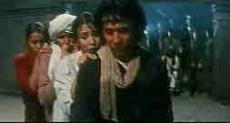

|
Operation Condor:Armour of God II/C+,C+ |
|
Media Asia/1997/125m |
This is Jackie Chan in full comic throttle. He's a manic mix of those silent movie stars of yesteryear. Think Harold Lloyd doing impossible stunts, think the entire array of Keystone Cops in antic chase. The climax that finds Jackie blowing in a wind tunnel is quite funny, though perhaps it goes on to long. It's the purest Chan sight gag I have viewed and I can understand the director's reluctance for shorten the blasts of wind from this sequence.
 |
|
Jackie and friends©Media Asia |
In
some ways this is a rip-off of Raiders of the Lost Ark, but of course Chan mines the
material for all the laughs he can and the stunt work is unique.
The widescreen images on this import DVD are pretty good. There is some
excessive enhancement which causes some NTSC artifacting, and some scenes lack tight color.


DVDPlanet is the DVD
incarnation of legendary laser retailer Ken Crane's. Deep discounts and serious service.

News, information, features about current films in theaters and in the
pipeline. Easy to use interface.


The Big Combo has
style to spare in reviewing films and producing feature articles. Check out their special
"Lingo" section.

Derek Germano of The Cinema
Laser, a one man whirlwind of reviews, just announced the posting of his 600th DVD
review .

The Feature Archive
has articles ranging from Akira
Kurosawa to Blonde Bimbos.
Movie Rage: Death in the Aisles
Everyone knows what it feels like to get angry at the
movies these days. Here's a humorous but not so delightful view of big screen misery.